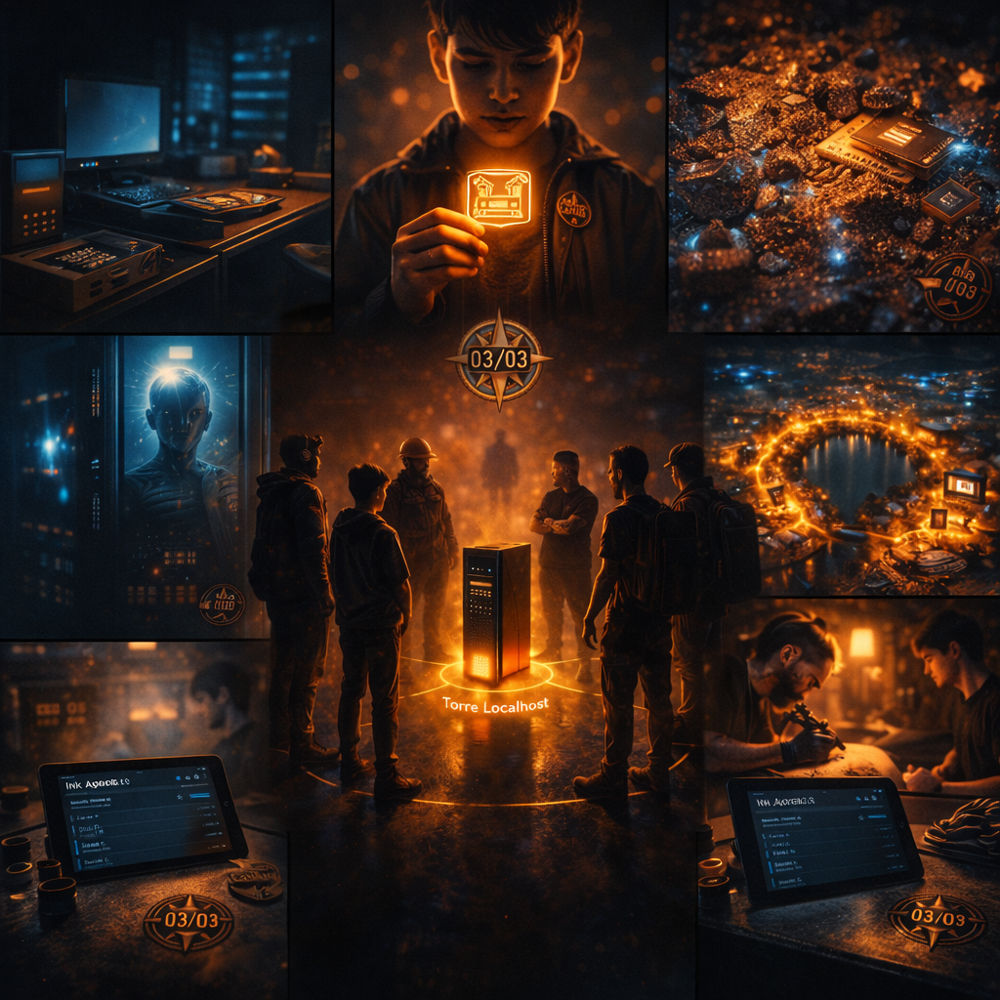

Amarelinha: Os Cinco Atos
O Espelho da Jornada
Lucas, agora um operador completo, olha para trás. Sete episódios. Sete sábados. Sete pilares aprendidos: PDV, OIDC, Minerador, ETE, Ferradura, Ink e Convergência. Mas tudo isso era preparação. Era a respiração antes do mergulho.
Agora, diante do espelho, ele vê a estrutura real. Não é poesia de sobrevivência ou drama de identidade roubada. É engenharia pura. É o Protocolo Amarelinha.
"Software não é amontoado de funções; é narrativa de confiança. Se a lógica falha, a confiança se fragiliza. Os cinco atos garantem que, do checkpoint de saída ao de chegada, cada kg, cada segundo, cada rota está documentado e protegido contra desvios."
Os Cinco Atos: Anatomia da Soberania
Ato I: Geometria — O Mapa
Um caminhão não navega no vazio. Antes de sair da garagem, cinco pontos são traçados no mapa local (SQLite, criptografado, soberano):
- Saída (Checkpoint 1): Curitiba Centro, -25.4284°, -49.2733°. Raio de validação: 500m.
- Passagem (Checkpoints 2-4): Três pontos de confirmação (Tatuapé, Campo Largo, Santo André).
- Chegada (Checkpoint 5): São Paulo Vila Mariana, -23.5889°, -46.6564°.
Cada checkpoint tem um "quadrado" no Dashboard JavaFX da sede. A cor começa em cinza (não alcançado), muda para verde quando o caminhão entra no raio, e pode ficar vermelha se a auditoria detectar divergência.
Ato II: Dinâmica — O Movimento
O caminhão está em movimento. A cada 30 segundos (ou menos), o APK envia bursts de telemetria:
- Latitude / Longitude (do GPS)
- Velocidade (em km/h)
- RPM do motor
- Massa atual (sensor Bluetooth calibrado)
- Timestamp (hora local sincronizada)
Se houver rede, os dados chegam em tempo real. Se não houver, ficam bufferados no SQLite do caminhão. Offline-first: dados nunca são perdidos.
Na sede, o Sovereignty Engine valida cada dado: "Este caminhão chegou no checkpoint 2? Sim. Qual era a velocidade média? 78 km/h. Qual era a massa? 29.950 kg." E registra tudo em hash chain imutável.
Ato III: Sombra — A Navegação Inercial
No Brasil de 2026, nem tudo é conectado. Um caminhão entra em túnel, perde o sinal GPS. Ou entra em zona rural e não há 4G. O que fazer?
Resposta: Navegar pela inércia.
O Ato III ativa quando o status GPS passa para "PERDIDO". O sistema toma a última velocidade conhecida (78 km/h) e a última direção (260° - sudoeste) e extrapola: "Se mantiver essa velocidade por 30 minutos em linha reta, o caminhão estará aproximadamente aqui."
No Dashboard, um ícone fantasma (cinzento, opaco, com alpha=0.4) começa a se mover lentamente. Um cronômetro regressivo marca o tempo máximo permitido na sombra (exemplo: esperado 30 min; alerta em 34,5 min). Se exceder, sinal.
É lidar com aleatoriedade brasileira: um desvio de rota não planejado agora tem áudio e visual. Transparência real.
Ato IV: Massa — A Auditoria de Lavoisier
Lavoisier, químico francês: "Na natureza, nada se cria, nada se perde, tudo se transforma."
Corolário brasileiro: se você começou com 30.000 kg e terminou com 29.500 kg, 500 kg ficaram sem registro.
O Ato IV compara a "massa esperada" inicial com a "massa observada" em cada checkpoint. A tolerância é de 2% (600 kg em 30 toneladas). Se a divergência for maior, a UI sinaliza:
- Transição de cor: o quadrado muda de VERDE para VERMELHO (animação 500ms).
- Som industrial: "crack_industrial.wav" toca no Dashboard.
- Rachadura visual: um SVG zigzagueia sobre o quadrado (efeito traumático).
- Alerta crítico: WhatsApp / Push notification para o patrão: "VIOLAÇÃO: Entrega #123 perdeu 1.500 kg no checkpoint 3."
- Log imutável: A violação é registrada em hash chain — não pode ser deletada, não pode ser modificada.
- Transição de cor: o quadrado muda de VERDE para VERMELHO (animação 500ms).
- Som industrial: "alerta_industrial.wav" toca no Dashboard.
- Sinal visual: um SVG zigzagueia sobre o quadrado (efeito de atenção).
- Alerta crítico: WhatsApp / Push notification para o responsável: "DIVERGÊNCIA: Entrega #123 teve 1.500 kg a menos no checkpoint 3."
- Log imutável: A divergência é registrada em hash chain — não pode ser deletada, não pode ser modificada.
Ato V: Céu — A Conclusão Celebrada
Se todos os 4 atos passam (geometria validada, dinâmica monitorada, sombra dentro do esperado, massa íntegra), o 5º ato é celebração.
Exemplo real: Entregador A diz "Perdi 500 kg por derramamento." Entregador B diz "Nunca saiu carga." A gestão não sabe. Com o Ato IV, o audit log mostra exatamente em qual checkpoint a massa variou — e se foi gradual ou abrupta.
Minerador (Valor): A IA de 2GB local calcula a rota otimizada, não aguarda comando de mega servidores. Valor extraído localmente.
Como os 6 Pilares Convergem no Protocolo
Agora o quebra-cabeça se encaixa:
ETE (Ironia): O Ato IV (Massa) é a ironia final: auditoria de Lavoisier que a ETE (limitada a nuances) não alcança. Uma fórmula simples é mais sábia.
Os seis pilares não são produtos. São funções de um único propósito: soberania operacional. O Protocolo Amarelinha é o teatro onde todos atuam em harmonia. PDV é a entrada. OIDC é o ator. Minerador é o roteiro. ETE é o contraponto irônico. Ferradura é o coro. Ink é a plateia que registra. E o Protocolo é o drama completo.
O Lançamento: 8 de Novembro de 2026
Amanhã, o Protocolo Amarelinha entra em produção em uma frota piloto: 10 caminhões, 4 semanas, geração ilimitada de dados. Não é experimento. É operação.
O que o mundo verá:
- Uma frota que tem zero perda de carga documentada.
- Relatórios que ninguém consegue falsificar.
- Decisões descentralizadas que rodam mais rápido que comitês.
- Um motorista que sabe exatamente o que aconteceu — e pode se defender com prova.
A Reflexão Final
Lucas vê a arquitetura e reconhece tudo. Sete episódios. Sete pilares. Agora, um único e elegante protocolo. Cinco atos que garantem confiança.
Ele pensa em Viktor, em Mikhail, em Guilherme, em Christian. Todos trabalharam pela mesma coisa: dar ao brasileiro as ferramentas para confiar em sua própria operação.
Não em corporação de silicon valley. Não em algoritmo que ninguém entende. Mas em lógica transparente, executada localmente, preservada em hash chain imutável.
Seja bem-vindo, Lucas. Você aprendeu os seis pilares. Você conhece os cinco atos. Você é operador de soberania. Amanhã, a frota levanta. E a confiança vira código.
Sobre Temporada I
Temporada I é uma série de 8 episódios (maio–novembro 2026) que narra a emancipação do soberano através de tecnologia tangível:
- Episódio 1 — O Apagão do Suserano (PDV): Sobrevivência através de resistência offline.
- Episódio 2 — A Identidade Roubada (OIDC): Segurança através de identidade federada e criptografia.
- Episódio 3 — Ouro, Prata e Silício (Minerador 4.0): Valor através de extração local de dados.
- Episódio 4 — O ETE e a IA de 2GB (ETE): Ironia através da limitação honesta do observador.
- Episódio 5 — Circuito Ferradura (Ferradura): Logística através de redes descentralizadas.
- Episódio 6 — A Marca na Pele (Ink Agenda): Permanência através de memória offline-first.
- Episódio 7 — Epílogo: O Acerto de Contas (Convergência): Convergência de todos os pilares.
- Episódio Especial — Amarelinha: Os Cinco Atos: A arquitetura técnica de soberania operacional.
Hashtags
Contato
- E-mail: suporte@caracore.com.br
- Site: www.caracore.com.br
- LinkedIn: Cara Core Informática
A série completa de sete episódios + especial arquitetônico
Seguir no LinkedIn
Artigo publicado em 14 de novembro de 2026
© 2026 Cara Core Informática. Todos os direitos reservados.